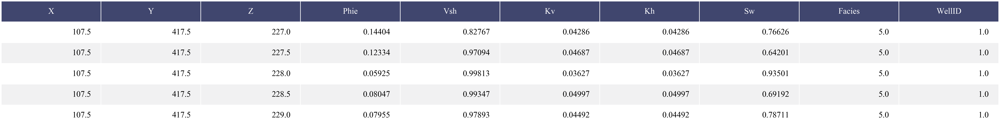
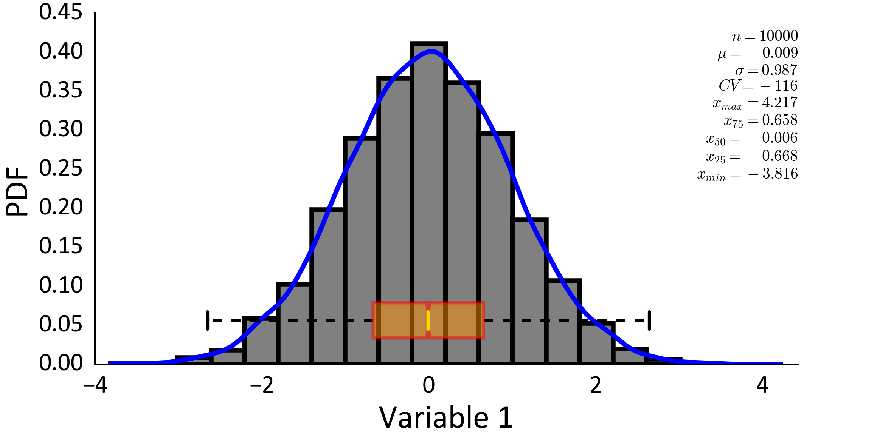
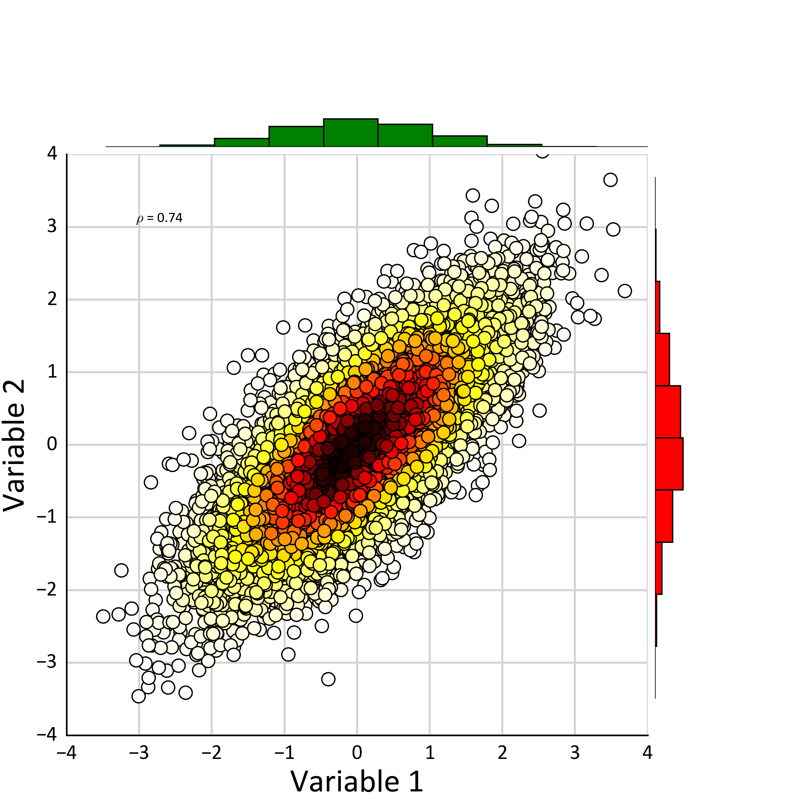
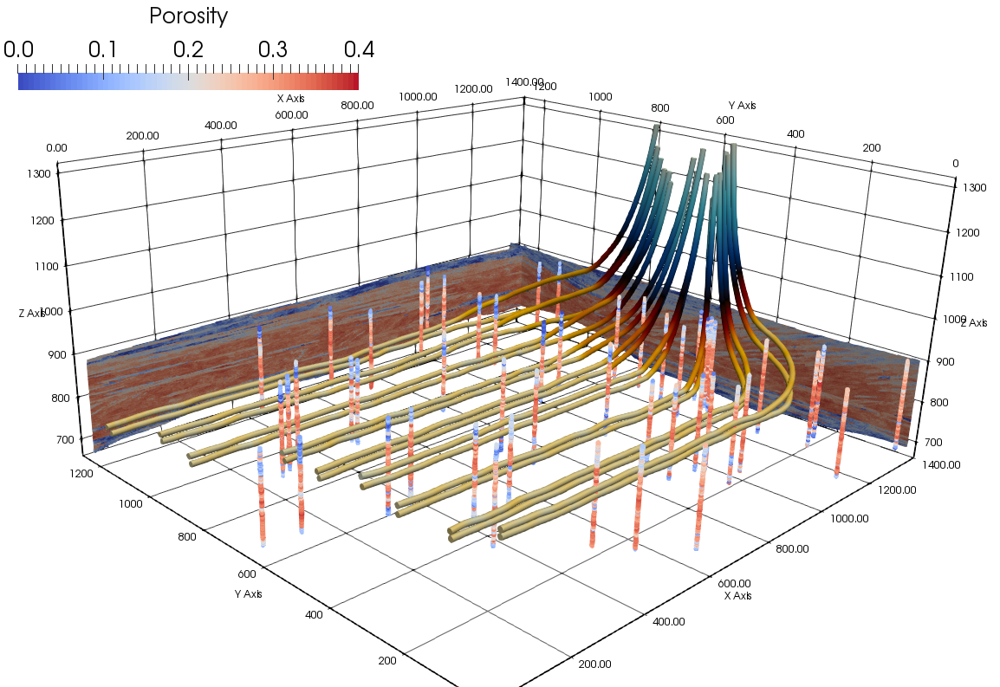
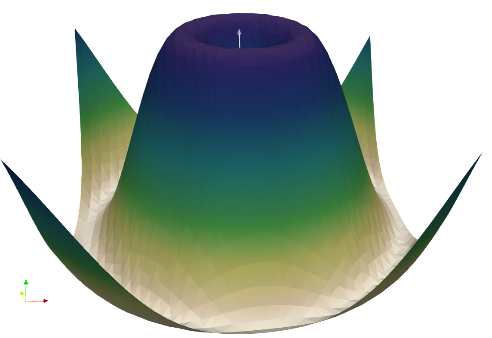
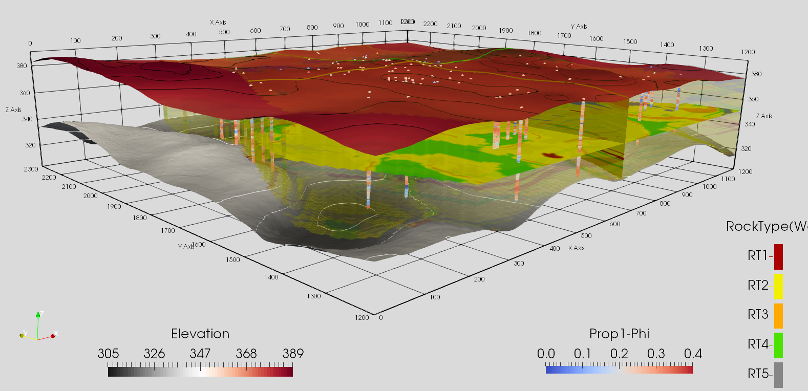

Plotting Tools¶
High quality, accurate and informative visualization is an essential tool for data analysis. A collection of python (mainly Matplotlib) and VTK based visualization tools are provided in PythonTools package.
plot_table¶
-
Plotting.plot_table(data, col_width=3.0, row_height=0.625, fontsize=14, header_color='#40466e', row_colors=['#f1f1f2', 'w'], edge_color='w', bbox=[0, 0, 1, 1], header_columns=0, title=None, titlefont=18, ax=None, axvisible=False, **kwargs)¶ This function plots a pandas data frame in a table format.
Parameters: - data (pandas.DataFrame) – Input data frame that will be plotted
- col_width (float) – Column width for data
- row_height (float) – Row height in the final plot
- fontsize (int) – Font size for table records
- header_color (str or tuple(int)) – Any permissible matplotlib color
- row_colors (list(color)) – List of permissible matplotlib colors (for two-color row sets)
- edge_color (str or tuple(int)) – Any permissible matplotlib color
- header_columns (int) – Numbe of header columns for coloring the table
- ax (Matplotlib.axis) – Matplotlib axis to plot the figure
- axvisible (bool) – Control ax visibility
- **kwargs – Optional permissible keyword arguments to pass to matplotlib table plot
Example
Plotting a data frame:
>>> PythonTools.plot_table(DF)
pdf_plot¶
-
Plotting.pdf_plot(var, wts=None, sigfigs=3, nbins=20, figsize=(8, 10), LW=3, line_color='black', xlabel='Variable 1', barcolor='gray', kde_flag=True, bw=0.2, lw_kde=3, kde_color='blue', Box=True, stats=True, statsMode='all', stat_xy=(1, 0.95), cdf=False, fontsize=10, legend=False, ax=None, showfliers=False, labelfont=21)¶ - Probability density plot based on kernel density estimate. Scipy package is used for kernel density estimation.
- kde is based on Gaussian kernels and it has automatic bandwidth determination. If the user sets a negative value for bandwidth, it will be determined automatically. The estimation works best for a unimodal distribution; bimodal or multi-modal distributions tend to be oversmoothed.
Parameters: - var – Tidy (long-form) 1D data where a single column of the variable exists with each row is an observation. A pandas dataframe/series or numpy array can be passed.
- wts – 1D dataframe, series, or numpy array of declustering weights for the data.
- nbins (int) – Number of bins to use
- figsize (tuple) – Figure size (width, height)
- LW (float) – line width for the bar plot
- line_color (str, tuple) – Any permissible matplotlib color
- xlabel (str) – X-axis label
- barcolor (str) – Any permissible matplotlib color
- kde (bool) – Option to calculate and plot kde
- bw (float) – Band width for kernel density estimation
- lw_kde (float) – Line width for kde line
- kde_color (str, tuple) – Any permissible matplotlib color
- Box (bool) – Option to plot a box for the plot
- stats (bool) – Option to include a summary statistics
- statsMode (string) – Summary statsitics shown in the plot (none, minimal, all)
Code author: Mostafa Hadavand 2015-20-7
Example
Plotting a data frame:
>>> DF = PythonTools.Run_Query(SQL_Query) >>> PythonTools.pdf_plot(DF['Air Quality Index'])
bv_plot¶
-
Plotting.bv_plot(x, y, xlabel='Variable 1', ylabel='Variable 2', bw=0.2, figsize=(10, 10), cmap='hot_r', contour=False, ax=None, s_size=100, fontsize=11, label_font_size=11, alpha=1.0, kde_label=True, cbar=True, stat_xy=(1.05, 0.99))¶ - Bivariate probability plot based on kernel density estimate. If the user sets a negative value for
- bandwidth, it will be determined automatically. The estimation works best for a unimodal distribution; bimodal or multi-modal distributions tend to be oversmoothed..
Parameters: - x – Tidy (long-form): Variable 1. 1D data where a single column of the variable exists with each row is an observation. A pandas dataframe/series or numpy array can be passed.
- y – Tidy (long-form): Variable 2. 1D data where a single column of the variable exists with each row is an observation. A pandas dataframe/series or numpy array can be passed.
- xlabel (string) – Lable for the x axis
- ylabel (string) – Lable for the y axis
- bw (float) – Bandwidth for kernel density calculation (negative value for automated pick).
- cmap ('str') – Matplotlib color map
Code author: Mostafa Hadavand 2015-18-8
Example
Plotting a bivariate normal distribution:
>>> PythonTools.bv_plot (x, y, bw = -1)
Well Trajectory¶
-
Plotting.trajectory_to_vtk(data=None, x='X', y='Y', z='Z', var='INCL', well_id='ID', vtp_folder='Wells_VTK', categorical=False, output_file='./Wells.vtm')¶ A function to write a vtk file that can be used to visualize well trajectory
data (pandas.DataFrame): Pandas dataframe containing array of data values x (string): Name of X coordinate column y (string): Name of Y coordinate column z (string): Name of Z coordinate column var (string): Name of variable column well_id (string): Name of well id column
Example
Plotting a collection of horizontal well trajectories:
>>> PythonTools.trajectory_to_vtk(data=DF, x = 'X', y = 'Y', z = 'Z', var = 'INCL', well_id = 'ID')
Surface Triangulation¶
-
Plotting.surface_to_vtk(z, griddef, flname='Surface.vtk', fmt='%.5f', centroid_always=True)¶ A function to write a vtk file that can be used to visualize a surface based on triangulation.
z (long-form): The elevation/depth picks for the surface. 1D data where a single column of the variable exists with each row is an observation. A pandas dataframe/series or numpy array can be passed. griddef(pygeostat griddef): A pygeostat object that contains grid specifications. flname (string): Name of the output file fmt (string): Format to write the vtk file centroid_always(bool): an option to determine if the surface was modeled at centroids (i.e. centroid_always = True) or grid corners (i.e. centroid_always = False)
Example
Plotting a collection of horizontal well trajectories: >>> import PythonTools as PT >>> grid_model = PT.GridDef([nx, xmn, xsiz, ny, ymn, ysiz,nz, zmn, zsiz]) >>> PT.surface_to_vtk(z, grid_model, flname=’Surface.vtk’)
 